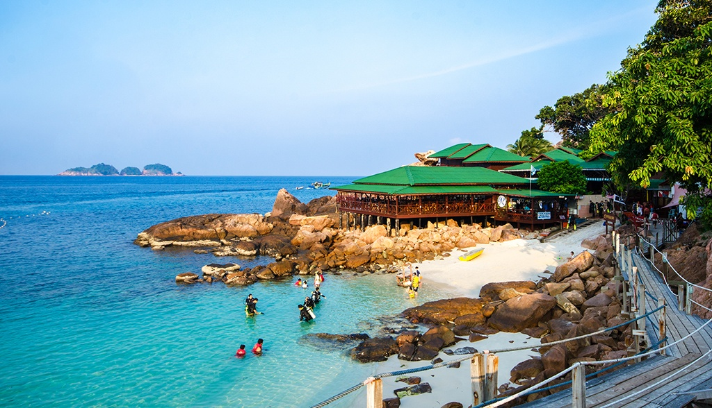

Interesting Destination in Terengganu: Redang Island
PRedang Island, located on the east coast of Terengganu, Malaysia, is one of the most renowned gems of the South China Sea. Known for its crystal-clear waters, stunning white sandy beaches, and coral reefs teeming with marine life, Redang is a paradise for divers and snorkeling enthusiasts. It is part of a protected marine park, ensuring its marine ecosystem remains well-preserved.
The island offers a luxurious holiday experience and is also ideal for families. The best time to visit is from March to October, when the weather is sunny and the sea is calm—perfect for unforgettable water activities.
Popular Activities on Redang Island:
- Snorkeling and Diving: Explore various snorkeling and diving sites such as Turtle Bay, Black Coral Garden, and Long Beach. You may encounter turtles, stingrays, reef sharks, and vibrant coral reefs.
- Island Hopping: Take a tour to nearby islands like Perhentian Island or Lang Tengah Island to discover more marine beauty and secluded beaches.
- Jungle Trekking: Venture into the island’s tropical rainforest to observe native flora and fauna in their natural habitat.
- Beach Relaxation: Enjoy stunning sunrises or sunsets at beaches like Pasir Panjang (Long Beach) or Teluk Kalong—perfect for a peaceful retreat.
- Turtle Conservation: Visit a turtle conservation centre to learn about ongoing efforts to protect endangered sea turtles.
Travel Preparation:
Redang Island can be accessed by ferry from Merang Jetty or Shahbandar Jetty in Kuala Terengganu. Be sure to book your accommodation and ferry tickets in advance, especially during peak season.
Whether you're looking for an underwater adventure or simply wish to relax on a beautiful beach, Redang Island is sure to leave you with priceless memories.